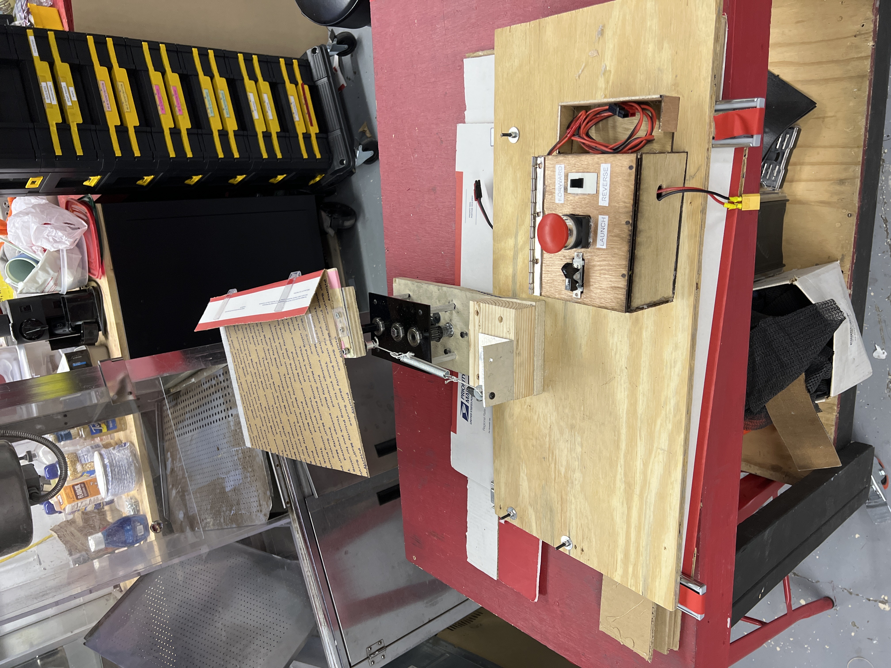
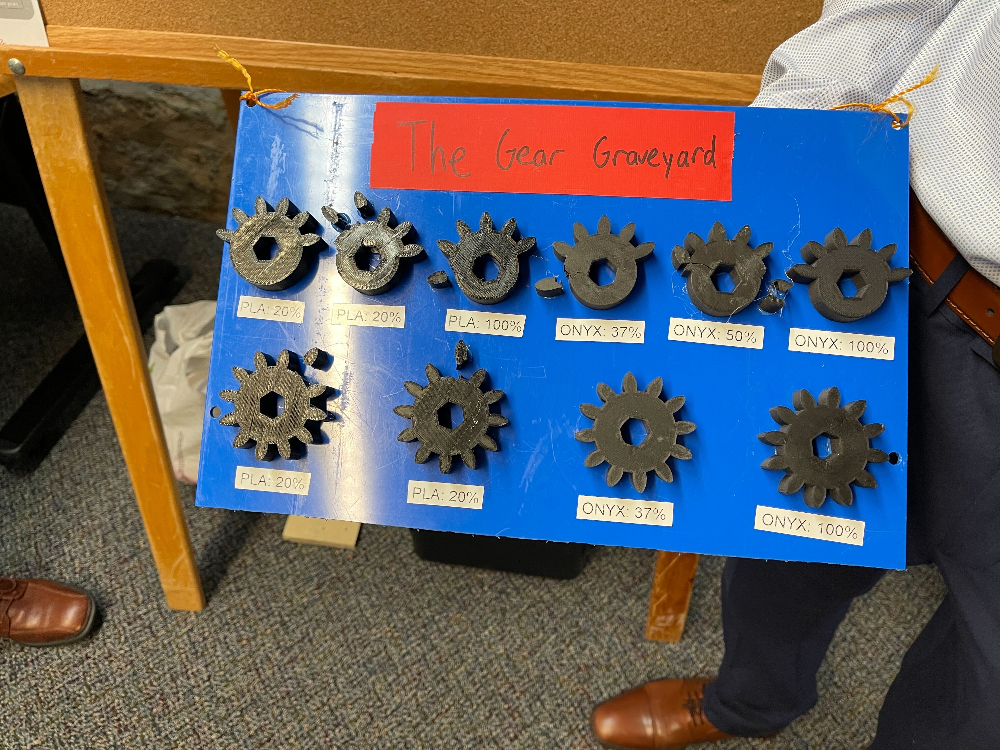

I led a team of four in the design and development of a wheelchair-mounted frisbee launcher, aimed
at enabling individuals with limited mobility to engage in active play with their pets.
My contributions included designing over five custom parts using OnShape, which
integrated a car window motor, spring, and gearbox to launch frisbees in a manner similar to a clay pigeon launcher.
I also developed an Arduino-based control system, programming it to operate the
motor with a relay for reliable and precise control of the launcher.
In addition, I collaborated with machine shop specialists to manufacture the device's custom parts,
ensuring high precision and quality in the final prototype.
To optimize the design, I applied mechanical stress modeling to calculate the
required strength of parts and determine the optimal gear ratios, ensuring durability and safety in
the long term.
Design Process
I led a team of four in the design and development of a wheelchair-mounted frisbee launcher, aimed at enabling individuals with limited mobility to engage in active play with their pets.
My contributions included designing over five custom parts using OnShape, which integrated a car window motor, spring, and gearbox to launch frisbees in a manner similar to a clay pigeon launcher.
I also developed an Arduino-based control system, programming it to operate the motor with a relay for reliable and precise control of the launcher.


Testing & Manufacturing
I collaborated with machine shop specialists to manufacture the device's custom parts, ensuring high precision and quality in the final prototype.
I applied mechanical stress modeling to calculate the required strength of parts and determine the optimal gear ratios, ensuring durability and safety.
Project Documentation
Documentation of the design process, testing procedures, and final results.